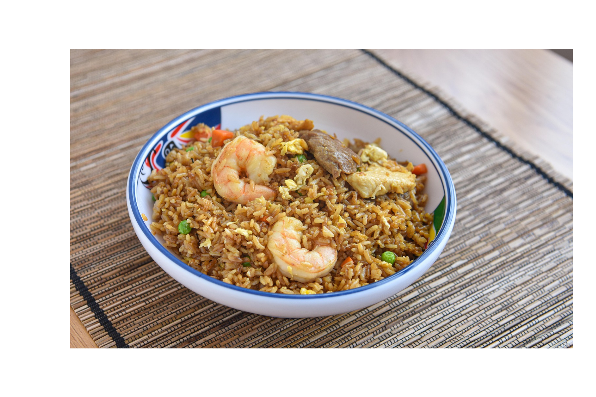

Home
Shrimp Fried Rice

Make restaurant-worthy shrimp fried rice with this top-rated recipe.
Ingredients
- Oil
- Shrimp
- Frozen vegetables
- Garlic
- Eggs
- Rice
- Green onions
- Soy Sauce
- Seasonings
Steps
- Cook the shrimp in oil, then remove from the pan and set aside.
- Add the frozen vegetables to the skillet and cook until they begin to soften.
- Add the garlic and cook until fragrant, then push the veggies to one side of the skillet.
- Scramble the eggs on the other side.
- Stir the shrimp, rice, and green onions into the skillet.
- Stir in the soy sauce and seasonings, then cook until the shrimp is reheated.